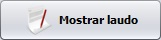
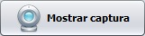

Apresentando a Tela de Laudo e Captura
Barra de Atendimento - localizada na parte superior da tela. Seu objetivo é selecionar o atendimento a ser trabalhado, e alternar entre os exames e procedimentos médicos do atendimento. Também aparece as opções de voltar e fechar.
Painel Alternador - neste painel serão alternadas as visões entre laudo e captura. Isso é feito através dos botões  e .
Painel de Imagens - neste painel são mostradas as imagens capturadas (em miniatura), bem como as opções de edição, exclusão e navegação entre as imagens.
Painel de Opções e Captura - este painel mostra opções de captura de imagens e vídeos. Também mostra opções de configurações e exportação.
Botão Mostra/Esconde Opções - ele esconde ou mostra os painéis de imagens e de opções e captura.
Para saber mais sobre as opções de captura, veja o tópico 4.3. Módulo de Captura.
Saiba mais sobre as opções do laudo no tópico 4.4. Módulo de Laudos.